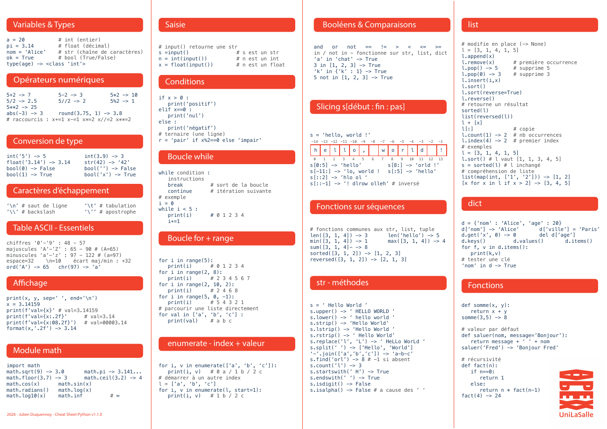

Chaque notion se présente en deux temps : une démonstration à exécuter, puis un exercice à écrire et à tester.
Le Codex compare ce que votre programme affiche à la sortie attendue, caractère par caractère. Les règles de lecture et d'affichage sont expliquées dans Débuter : input() et print().
Chargement de Python…
La Cheat Sheet Python
La Cheat Sheet Python tient sur une page. Elle rassemble la syntaxe dont les exercices ont besoin :
variables et types, saisie et affichage, opérateurs, conversions, conditions, boucles, chaînes,
listes, dictionnaires, fonctions, module math, table ASCII.
Gardez-la ouverte pendant l'atelier : chaque notion qui suit y figure.
À l'examen, la même Cheat Sheet est fournie sur demande.
📄 Ouvrir la Cheat Sheet Python
1. Afficher avec print()
print() affiche une ligne. Deux print() affichent deux lignes.
Démonstration
print("Bonjour")
print("SkillQuest")
Ce programme ne lit aucune entrée.
2. Lire un texte avec input()
input() lit une ligne de l'entrée et la rend sous forme de texte. print(a, b) sépare les valeurs par une espace.
Démonstration
prenom = input()
print("Bonjour", prenom)
Entrée : Camille
3. Lire un nombre et calculer
input() rend du texte. int(input()) le convertit en entier, ce qui permet de calculer.
Démonstration
longueur = int(input()) largeur = int(input()) print(longueur * largeur)
Entrée : 6 ⏎ 4
4. Plusieurs valeurs sur une ligne
input().split() découpe la ligne aux espaces et rend une liste de textes.
Démonstration
morceaux = input().split() longueur = int(morceaux[0]) largeur = int(morceaux[1]) print(longueur * largeur)
Entrée : 6 4
5. Tester une condition : if, else
if exécute un bloc quand la condition est vraie, else exécute l'autre bloc. Le bloc est décalé de quatre espaces.
Démonstration
note = int(input())
if note >= 10:
print("Validé")
else:
print("Non validé")
Entrée : 12
6. Répéter avec une boucle for
for i in range(1, n + 1): répète le bloc pour i allant de 1 à n.
Démonstration
n = int(input())
for i in range(1, n + 1):
print(i)
Entrée : 3
7. Lire plusieurs lignes dans une boucle
La première ligne annonce le nombre de valeurs qui suivent. La boucle appelle input() une fois par valeur.
Démonstration
n = int(input())
total = 0
for i in range(n):
total = total + int(input())
print(total)
Entrée : 3 ⏎ 12 ⏎ 7 ⏎ 5
8. Lire un message d'erreur
Le message d'erreur donne le type de l'erreur et sa cause. Ici, input() rend le texte "18", auquel Python ne sait pas ajouter le nombre 1 : c'est une TypeError. La correction est int(input()).
Démonstration
age = input() print(age + 1)
Entrée : 18
9. L'écran d'un exercice du Codex
Un exercice du Codex tient sur un écran, en quatre zones. Chaque zone défile pour elle-même.
Le problème, les contraintes, puis l'indice. Les solutions s'y ajoutent après « Tous les tests ».
Votre programme. « Effacer » revient à l'amorce. Le code est gardé dans le navigateur.
Chaque jeu : son entrée, sa sortie attendue, « ▶ Tester ». En bas, « ▶▶ Tous les tests ».
L'entrée lue, ce que votre programme affiche et, en cas d'échec, la sortie attendue.
- ☰ Exercices ouvre la liste du niveau, avec ses filtres. Précédent et Suivant parcourent cette liste.
- ▶ Tester, sur la ligne d'un jeu d'essai, exécute votre programme sur ce seul jeu. La console montre le détail.
- ▶▶ Tous les tests joue les jeux dans l'ordre et s'arrête au premier échec. Le numéro de chaque jeu passe au vert s'il réussit, au rouge s'il échoue. La console détaille le jeu en échec.
- Ctrl+Entrée, dans l'éditeur, lance tous les tests.
- La console accepte aussi une entrée personnalisée, pour essayer d'autres valeurs que celles des jeux d'essai.
- Un exercice est réussi quand tous ses jeux d'essai passent. Il est alors coché dans la liste.
La préparation à l'examen reprend le même écran. Les jeux d'essai y sont des appels de fonction, et la console montre la valeur renvoyée.
10. Passer aux exercices du Codex
Les exercices du Codex suivent le même principe : un énoncé, une amorce, des jeux d'essai. Les exercices réussis sont conservés dans votre navigateur.
Niveaux I à IV
Les exercices du Codex, du plus simple au plus difficile. Commencez par Programmation I.
Préparation au test CoderPad
À l'examen, les données arrivent en paramètres et le résultat se rend avec return. Six exercices pour prendre le pli.
En groupe, le mode arène lance un exercice pour tous, avec un chrono commun et un classement.